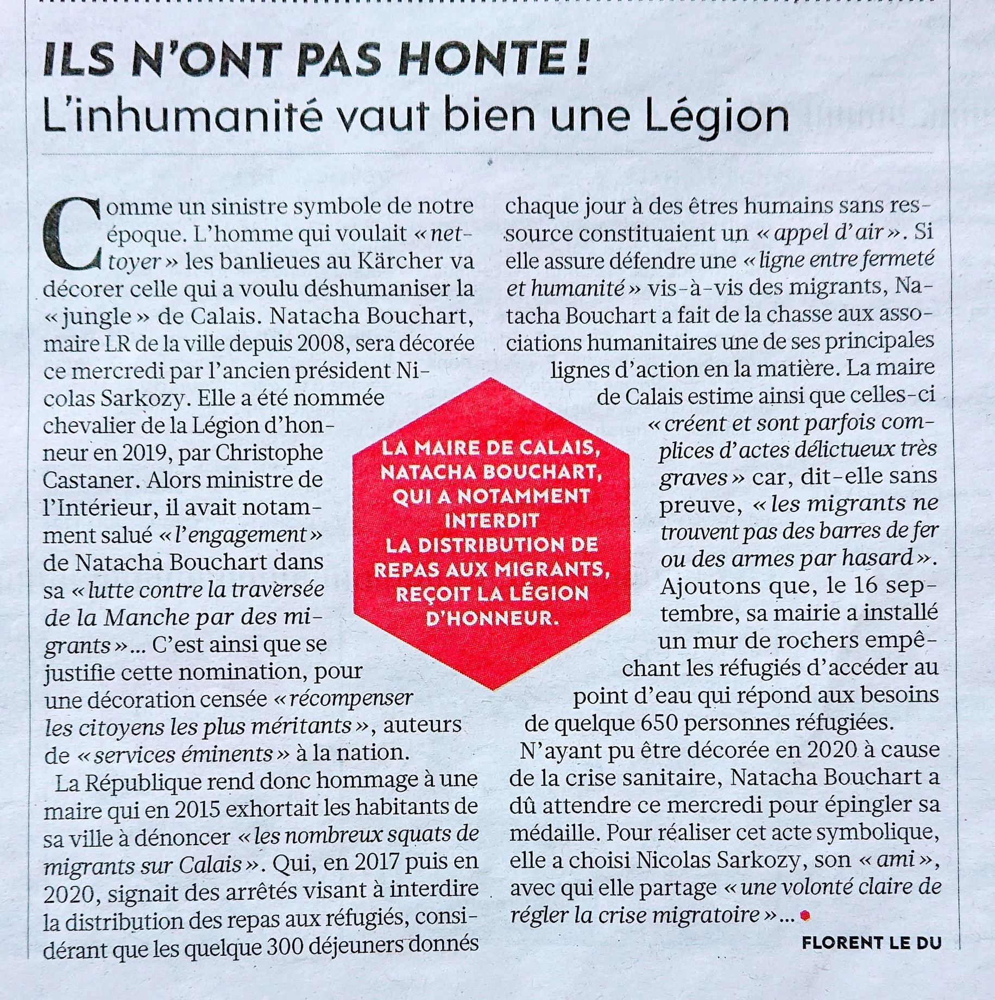

Publication d’archives
La maire de Calais, qui a notamment interdit la distribution de repas aux migrants, reçoit ce jour la légion…
Date indiquée par Facebook · 22 septembre 2021
Texte conservé avec la publication
Contexte du dossier
Le message du 22 septembre oppose la décoration de la maire de Calais à sa politique envers les distributions de repas aux migrants. Le 26 novembre, après le naufrage dans la Manche ayant fait 27 morts selon le texte, l’alerte devient une mise en cause plus large des politiques françaises et européennes. La publication rapproche morts aux frontières, enfermement, expulsions et menaces sur l’hébergement. Elle défend des voies légales et sûres et refuse le vocabulaire de l’invasion. La frontière n’efface pas la responsabilité politique : chaque obstacle dressé devant les personnes a des effets sur leur sécurité et leur vie.

Sources
Archive rouge · export Facebook · AR-0002-FB-02023
À lire aussi · À Prahecq, défendre une scolarité et une vie construite ici